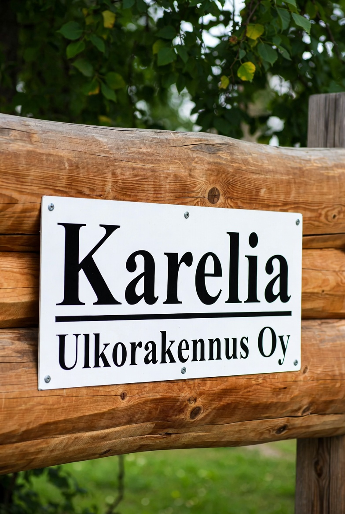

Paikallinen ja luotettava kumppani Joensuussa
Karelia Ulkorakennus Oy on joensuulainen yritys, joka tuntee Pohjois-Karjalan olosuhteet ja rakenteet syvällisesti. Suunnittelemme ja rakennamme ulkotiloja, jotka kestävät aikaa, käyttöä ja pohjoiskarjalaisten olosuhteita.
Yhteistyö kanssamme on suoraviivaista ja läpinäkyvää: kartoitamme tarpeen, suunnittelemme ratkaisun, sovimme aikataulun ja kustannukset, ja toteutamme työn sovitusti. Pidämme asiakkaan ajan tasalla projektin jokaisessa vaiheessa.
Lue lisää yrityksestäKokemusta ja referenssejä Pohjois-Karjalasta
Olemme toteuttaneet yli sata ulkorakennus- ja piharakentamisen projektia Joensuussa ja lähikunnissa. Tyypillisiä kohteita ovat omakotitalojen ja vapaa-ajan-asuntojen pihat, sekä taloyhtiöiden piha-alueet ja yrityksen ulkotilat.
Kysy tarjouspyynnön yhteydessä lisää referensseistämme – esittelemme mielellämme aiempia toteutuksia, jotka vastaavat sinun toiveitasi ja projektisi vaatimuksia.